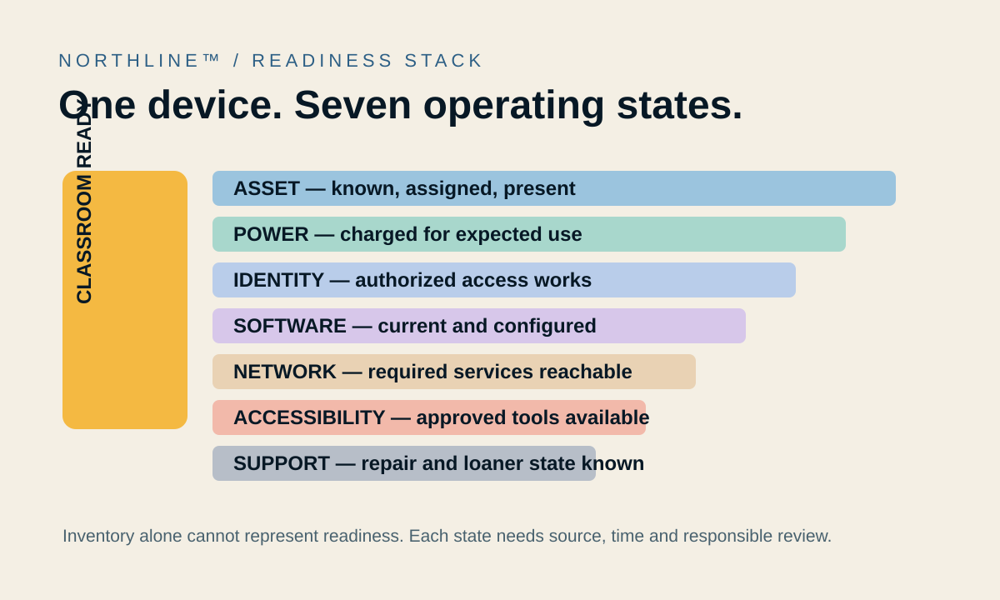
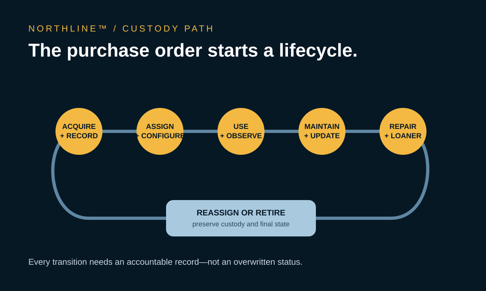

The Laptop Cart Is an Operations System
NORTHLINE™ by Function Media LLC | Readiness Bay Edition
At 8:03 on a Tuesday morning, a teacher opens a laptop cart. Twenty-two devices are where they should be. One slot is empty. Two machines show no charge. Another laptop is present and powered, but the student assigned to it cannot sign in.
The lesson has not failed. But four small operational failures have arrived in the classroom at the same time.
Schools often talk about student technology as a purchase: a cart, a laptop, a tablet, a license. Teachers experience it as a condition. Is the device present? Charged? Assigned to the right student? Updated? Connected? Configured for the student who needs it? If something is wrong, is there a loaner—and does anyone know where it is?
That is why a laptop cart is not merely furniture. It is the visible edge of an operations system.
A device has more than one state
An inventory record can say a laptop belongs to Room 214 while saying nothing about whether it is ready for the next class. Readiness is assembled from several different facts:
- Asset state: the serial-numbered device is known, assigned and physically present.
- Power state: the battery and charging bay can support the expected use period.
- Identity state: the right student or educator can authenticate with the appropriate role.
- Software state: required applications, security updates and configurations are current.
- Network state: the device can reach the services needed for the lesson.
- Accessibility state: approved assistive settings and tools are available to the learner who needs them.
- Support state: an unresolved repair, warranty case or replacement request is visible.
One green inventory status cannot honestly represent all seven.

This distinction matters because each state may live in a different system. Asset management knows the serial number. An identity platform knows the account. A device-management service knows the update status. A service desk knows the cracked hinge. A charging cart knows almost nothing beyond physical placement and power. The teacher sees the combined result, but rarely the chain that produced it.
The empty bay is evidence
An empty slot is easy to treat as absence without context. It could represent a device checked out for home use, a repair in progress, an unrecorded classroom transfer, a laptop sitting in the library, or a machine that has disappeared.
Those are not equivalent conditions. Each carries a different next action and a different level of urgency.
A responsible operational system preserves the difference between not present, location unknown, authorized checkout, under repair and retired. It also records who observed or changed that state, when it happened and which system supplied the fact.
That lineage protects people as much as equipment. A teacher should not be blamed for a missing device that was collected by the repair team. A technician should not have to search for a laptop that was formally reassigned. A principal should be able to distinguish a documentation gap from a custody problem.
Readiness crosses departmental lines
The technology director may own device standards. The finance office may control replacement funding. School staff manage daily custody. Teachers discover failures at the moment of use. Student services may define accessibility requirements. Cybersecurity staff set update and account controls.
No single department owns the whole condition called ready.
That is the same operational problem NORTHLINE™ is being designed to address across the school day: permitted records exist, but the consequential event appears at the handoff between them. The useful question is not simply “What does each system say?” It is “Do these records agree closely enough for an authorized person to act?”
For a device, that might mean connecting the asset identifier, assigned student, classroom schedule, repair ticket, update status and loaner availability—without exposing information to people who do not need it.
NORTHLINE is not presented as a replacement for device-management, identity or help-desk tools. Its role is the operational layer: preserve source lineage, identify meaningful contradictions and give authorized school staff a reviewable picture of what needs attention.
The morning check should be selective
Teachers do not need another dashboard full of every technical detail. They need a short, credible answer before the lesson begins.
A useful readiness view might show:
- devices expected in the cart;
- devices that are absent or in an unresolved state;
- known power or update risks;
- students whose access requires review;
- available loaners; and
- the person or team responsible for the next action.
The interface should separate what is known from what is inferred. If a device has not reported its battery state, the system should say not recently observed, not uncharged. If a laptop is assigned to a repair ticket but still appears in the cart, the contradiction should be surfaced without inventing an explanation.
That precision keeps the teacher in authority. The system organizes evidence and routes attention; it does not decide how to run the classroom.
Maintenance is part of instructional time
Software updates, battery degradation, damaged cables and depleted spares are commonly treated as technical background. In practice, they shape whether instruction begins on time.
The U.S. Department of Education emphasizes that K–12 data security requires ongoing administrative, physical and technical safeguards. CISA’s 2026 K–12 guidance similarly places asset inventory, account controls and timely updating among foundational practices. These are security disciplines, but they are also availability disciplines. An unmanaged device is harder to protect, repair and return to service.
The strongest school technology program therefore measures more than the number of devices purchased. It watches the time from reported failure to usable replacement, the percentage of devices in a known state, the age and support status of the fleet, recurring damage patterns and the amount of instructional time lost to preventable readiness problems.
Those measures should support improvement, not surveillance. The goal is to understand the system around the teacher—not score the teacher for the system’s failures.
Accessibility cannot be an afterthought
A technically functional laptop may still be unusable for a particular student.
Approved accessibility settings, input devices, display preferences and assistive software can be part of operational readiness. A replacement device that lacks them is not an equivalent replacement. A loaner process that restores the standard image but omits an authorized accommodation can turn a quick swap into a barrier.
This is another reason generic availability counts are insufficient. “Twenty-four devices online” does not answer whether the correct student can use the correct device under the conditions the school has approved.
NORTHLINE’s design direction is to represent those dependencies with role-based access and the minimum information necessary for action. Sensitive student information should not become a classroom-wide asset label. The operational record should indicate that a required configuration is complete, incomplete or needs authorized review.
The board bought a lifecycle, not a box
The price printed on a purchase order is only the opening cost. CoSN’s total-cost-of-ownership guidance asks districts to account for hardware, software, infrastructure, support, training and indirect labor across the lifecycle.
That broader view changes board and budget conversations. A cheaper device that requires more repair labor, shorter replacement cycles or specialized accessories may not be cheaper in practice. A one-to-one program without funded spares can move the cost of failure directly into classroom time.
Good governance connects the public investment to observable operating conditions:
- How many devices are in a known, supported state?
- How long do students wait for a usable replacement?
- Which models or accessories create repeated support demand?
- When do warranties, licenses and vendor support expire?
- Which replacement assumptions were approved, and are they still realistic?
These questions do not require a board to manage individual laptops. They allow the board to understand whether the system it funded remains sustainable.

Make readiness visible before the lesson
The laptop cart is where policy, procurement, identity, cybersecurity, maintenance and teaching finally meet. Its empty bay is not a minor visual detail. It is a signal that a chain of records and responsibilities may no longer agree.
The aim of better school technology is not to surround educators with more screens. It is to make the infrastructure dependable enough that the technology recedes and the lesson can begin.
At 8:03, the teacher should not have to reconstruct the district’s operations from four different systems. The exceptions should already be bounded, the available replacements should be known, and the next responsible person should be clear.
That is what it means to treat the laptop cart as an operations system.
Function Media LLC is developing evidence-centered systems that connect source lineage, operational context and human review. NORTHLINE™, VERISCOPE™ and SAFEPLATE™ demonstrate this broader applied-systems direction. No customer deployment, guaranteed outcome or measured performance is claimed here.
Working with Function Media: Selected institutional pilots, purpose-built systems, sponsored development, licensing, integration and strategic partnerships are considered through Function Media partnerships.
Public sources
- U.S. Department of Education, Data Security: K–12 and Higher Education.
- CISA, K–12 Cybersecurity Foundations Implementation Guide, August 2026.
- CISA, K–12 Cybersecurity Foundations Getting Started Guide, August 2026.
- CoSN, Total Cost of Ownership, updated April 2026.